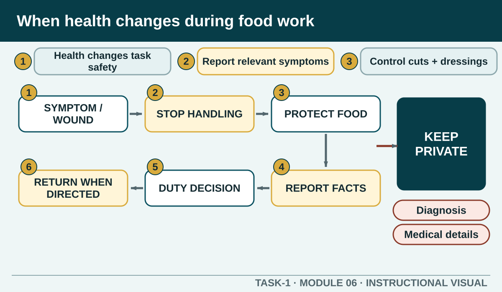
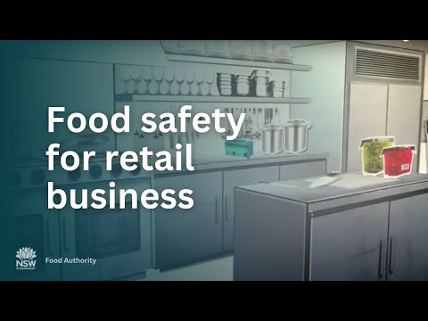

Prior learning
Recall the previous lesson and bring forward one question or completed learning artefact.
Task 1 · Lesson 6 of 16
Recognise when illness, symptoms, wounds or personal behaviour may affect safe food handling and report concerns early without recording private medical details.
Prior learning
Recall the previous lesson and bring forward one question or completed learning artefact.
Success criteria
Learning boundary
This lesson supports preparation and formative practice. The current authorised package and trainer/assessor control formal products, observations, dates and submission.
A person can become a source of food contamination through illness, symptoms, infected skin conditions, uncovered wounds or poor respiratory and hand-hygiene behaviour. The correct response begins before food handling, because a later clean-up may not undo exposure that has already occurred.
The learner's role is to recognise and report relevant concerns to the responsible person. The authorised person decides whether duties, additional controls or exclusion from food handling are required. Do not decide privately that the risk is acceptable because the practical seems important.
Use the current food-handler and workplace guidance to identify symptoms or conditions that must be reported. Tell the responsible person before beginning relevant work, and report changes that appear during the task. Give enough factual information for a safe duty decision without broadcasting personal details to the class.
Gloves, masks or extra handwashing do not automatically make every illness-related situation suitable for food handling. Follow the direction provided and do not move yourself to another food task without approval.
A cut or wound may expose food to biological contamination and the worker to further injury. Report it, obtain the required first aid and use the workplace-approved waterproof, visible dressing with any additional glove control directed for the task.
Check the dressing before and during work. If it loosens, becomes wet, damaged or missing, stop handling food, protect affected items and notify the responsible person. Never continue while assuming the dressing will be found later.
Turn away from exposed food and equipment, use the authorised respiratory-hygiene method, dispose of any tissue and wash and dry hands before resuming. Replace or reprocess anything contaminated according to the procedure and report concerns when food may have been exposed.
Touching the face, nose, mouth or hair also creates a handwashing trigger. The professional response is an immediate reset, not embarrassment or concealment. The control is strongest when it happens before contaminated hands return to a handle, utensil or ready-to-eat food.
If illness, a wound or respiratory event may have exposed food, stop the affected task and keep the product from service. Tell the responsible person what occurred, which product or area may be affected and what immediate control was taken. Follow the authorised decision for disposal, reprocessing, cleaning and documentation.
Do not taste, smell or visually inspect food as proof that it remains safe. Many hazards cannot be identified that way. Do not quietly remove the top layer or transfer the product to a new container to hide the event.
An incident or food-safety record may need the task, time, affected area, immediate action and person notified. Use the authorised form and include only the information required. This learning site should not store diagnoses, medication details, medical certificates or other private health records.
A return to food handling occurs only after the authorised person confirms the work is suitable under current guidance and local procedure. Continue following hand, dressing and presentation controls after returning; prior approval does not remove ordinary hygiene responsibilities.
Phone view: swipe across the diagram, or use Open larger below.


External media loads only after you choose it.
Source-linked video
Watch for: Identify the observable food-safety controls that apply from personal hygiene and preparation through storage and service. Match each observation to the specific lesson rather than copying an unrelated procedure.
Formative practice
Each option explains the workplace consequence. These responses save on this device.
Written application
Use observable facts, explain the consequence and keep local assessment or procedure details with the authorised source.
Self-checkApply and keep evidence
Choose when to prepare, stop, report or seek an authorised PPE direction.
Use the check result, activity record and written response as formative learning evidence only. Formal evidence remains controlled by the current package and trainer/assessor.
Next: Cleaning and sanitising.
Authorised source note: Source basis: authorised Cycle 1 personal-health, illness, wound and hygiene content, supported by current NSW Food Authority food-handler guidance. Specific reportable conditions, duty changes and return-to-work directions remain controlled by current guidance and Teacher to confirm.